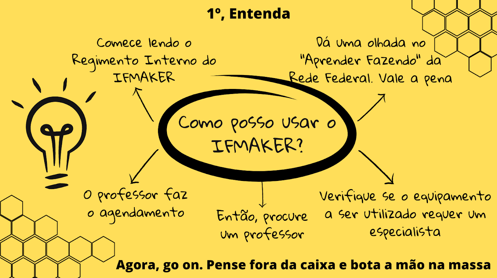
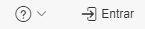
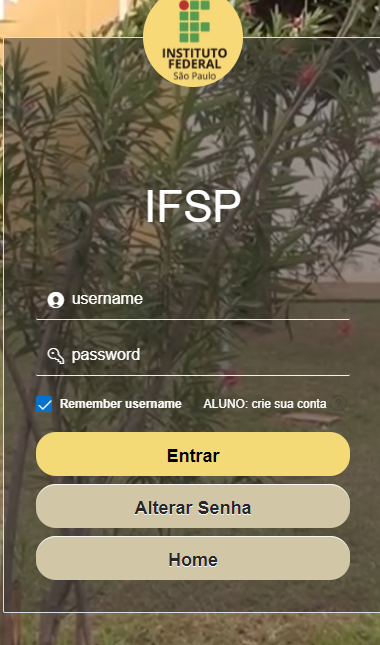
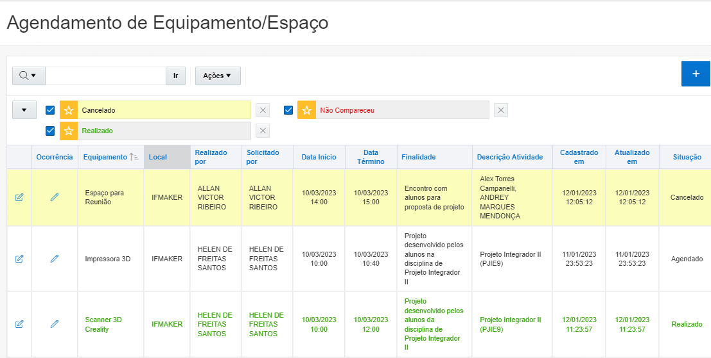
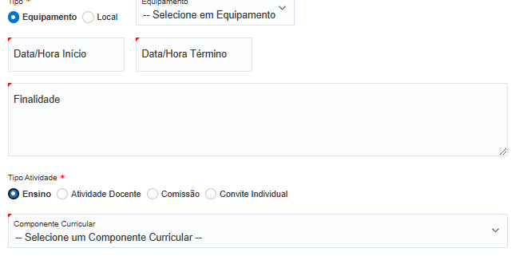

O "Aprender Fazendo" da Rede Federal. Confira os documentos do laboratório:
Acesse o sistema Transparência IFSP-BRI neste link.
Faça login clicando em "entrar", no canto superior direito.

Informe seu e-mail e sua senha e clique em Entrar.

Verifique a disponibilidade em Espaço de Aprendizagem > Agenda > Equipamento/Local.

No mesmo menu, clique em "Agendamento".

Veja seus agendamentos e clique em "+" para agendar.

Informe os dados do seu Innovation Day e envie.


Tem uma ideia, projeto ou dúvida sobre o laboratório? Fale com a gente e agende sua visita ao LabIFMaker.
☎ @ifsp.bri
⊕ bri.ifsp.edu.br
✉ ifmaker.bri@gmail.com
Rua Pedro Cavalo, 709 — Birigui, SP
O LabIFMaker pertence ao Instituto Federal de Educação, Ciência e Tecnologia de São Paulo (IFSP) e fica dentro do Câmpus Birigui.

Bora lá...


Rua Pedro Cavalo 709, Residencial Portal da Pérola II, Birigui-SP, CEP 16.201-407